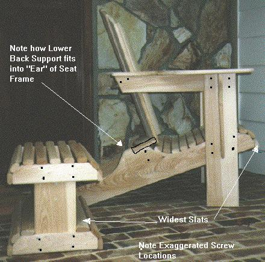
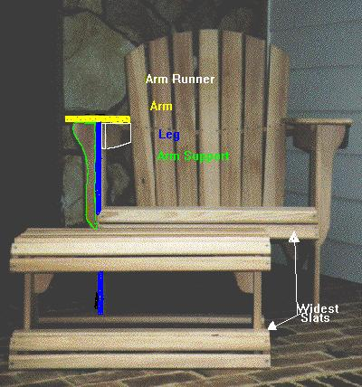
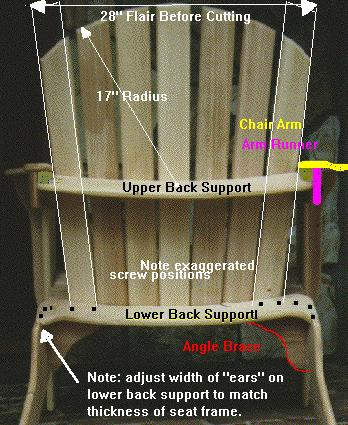
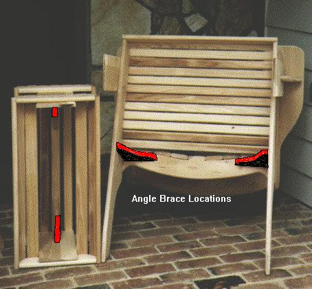

Oh, and I do realize that pine is not the best choice, expecially from the perspective of being knot-free. But, it was the most cost effective choice for the first piece of wood furniture I've ever built.
Below you'll find the original post this is based on as well as complete instructions for how to built your own "Jake's Chair".
Wars were fought on those hot Missouri afternoons over who would get the chairs, and who would be left to sit on the front steps or porch railing. All the Judge's chairs were of the same design, and were made for a big man. Jake had the chairs built to his own specifications. While reminiscent of Adirondack chairs, Jake's Chair was different. The back curved gently and the seat was contoured. The chair was as big as Jake, and just as solid, but retained the gentle lines of good furniture design.
My recreation of Jake's Chair includes:
Since any project produces scraps, the plans also include a footstool that can be made using scrap and additional material. The matching footstool is as sturdy as Jake's Chair, and is also useful as a step stool, seat, or even a low table.
Unlike a flat-backed chair recently built on the New Yankee Workshop, there is no need for stationary tools or difficult compound cuts. Besides, Jake's Chair is more attractive than Norm's, and can be used either with or without a cushion.
Since I am also a woodworker, practical advice is given in the selection of the material at the lumberyard along with a discussion of layout of the pattern pieces on the boards to save lumber. Flexibility of construction and material are a hallmark of JAKE'S CHAIR. For example, only two small cuts need to be deepened if the builder decides to use 1" or even 1- 1/2" material. These places are clearly marked on the plans.
The plans, photographs and text file for Jake's chair and its matching footstool are available in .ZIP format absolutely FREE here. Included in the file is a great blow-by-blow description of how to build the chair, individual drawings or each part in .bmp format, that can be printed out on typing paper, photos of the completed chair and detail photos of the different views- all color coded to the plans. The .bmp format is the format used by PAINT, included in all Windows packages.
The file is an example of how Internet and rec.woodworking can be used by us to transmit plans, drawings and pictures to enhance our discussions on rec.woodworking. The only formal requirement is that the plans and photos not be sold. You are free to copy them and share them with others, however. Chairs built from the plans may be sold commercially, if desired. My only requirement for use of the plans and photos is that the chair and footstool always be identified as a "Jake's Chair."
Tom Gauldin, Raleigh NC
As we would try the commercial chairs, I would make comments to my wife about the missing or uncomfortable features, and would compare them unfavorably to the chairs we both remembered from our childhood on Jake's front porch. She finally told me, "Let's stop looking at chairs and you go home and build the perfect chair. . . like Jake had on his front porch." I took that as a challenge and a week later, we had guests over to try the first scrap-wood prototype of Jake's Chair.
The guests were honest in their comments, and a number of small revisions were made. In addition, I refined many construction problems so that the fifth and (almost) final version of Jake's Chair was not only simpler to build than most of the commercial Adirondack chairs, it was far sturdier and more comfortable.
I have a wonderful wife who has never objected to the common sense purchase of tools for my shop. As a result, I have a reasonably complete wood working shop with planer, jointer, radial arm saw, band saw, table saw, table router and shaper. Since I intended for Jake's Chair to be built by anyone, the sixth and final revision of the plans was based on constructing it with just the basic hand tools. I felt that if I could build Jake's Chair using a drill, hand router, circular saw and saber saw, that most weekend carpenters could do the same. More extensive tools in your shop only will make it easier and faster.
I also was quite firm in my decision to work strictly with lumber measuring 3/4" thick. Jake's Chair is not compromised at all by the use of the thinner material, yet the weight and looks are much better than commercial chairs that require thicker parts in some areas.
In preparing the plans for JAKE'S CHAIR, I included the drawings and material for the footstool. The footstool and JAKE'S CHAIR are a perfect match, and you would really be cheating yourself by not building the footstool at the same time you build JAKE'S CHAIR.
I also give definitions or explanations for the terms I use. For example, when I describe the material, I may refer to it as a 1" X 12" board. However, I will also note that the board will measure 3/4" by 11 1/2" when measured.
I would like to hear from you about your experience building JAKE'S CHAIR and any suggestions or comments you might have. I lost my hearing many years ago, so your comments to me should be either by e-mail, letter, or by FAX. By the way, NONE of this material is protected by copyright. I honestly hope that you GIVE these plans or patterns to your children or relatives when you are finished with them. I do ask that these plans not be reproduced for resale. You are free to sell the finished chair, however. If you sell the chair or give it away, please let the new owner know that its called a "Jake's Chair" in honor of Judge Josiah Marion (Jake) Robertson, of Marshall MO who first designed it for his front porch.
Thomas A. Gauldin
12333 Wingspread Way
Raleigh, NC 27614
FAX (919) 676-1404
scoundrl@mindspring.com
Lumber list- see discussion below
Jake's Chair only:
Hardware list- galvanized deck-type or stainless steel screws
(read entire article before purchasing)
LENGTH JAKE'S CHAIR Footstool Total 1-1/4" 16 8 = 24 1-5/8" 68 36 = 108 2" 4 2 = 6 3-1/2" 4
Other material:
When purchasing the wood, you will find the patterns are easier and more efficient to lay out on the wider pieces. This is particularly true when there are knots. Buying the longest lumber you can easily handle in your shop also gives your more flexibility in layout.
Pine- If the chair is to be painted, the most economical choice is #2 SPF (Spruce, Fir, Pine) in 1" X 10" or 1" X 12" widths. The resulting finished lumber will thus measure 3/4" X 9-1/2" or 11-1/2". Lately, there has been a premium on the 12" width and I advise against wasting the money. I prefer to pick through the lumber at the lumber yard and buy the boards in 14' or longer lengths. Since the lumber is so inexpensive, you can afford to "cut around" knots. Be sure that the boards aren't very cupped, since they cannot be used for the larger pieces. If some of the SPF is cupped, use it for the narrower parts, and not the legs, seat frame or arms.
Redwood- This soft outdoor wood works well for JAKE'S CHAIR. Redwood is usually available in the preferred wider widths and comes S4S (surfaced four sides). While costing usually more per board foot, there is some economy in premium Redwood, since there are no knots to "cut around." The S4S finish is also quite comfortable against the skin when using JAKE'S CHAIR.
Western Red Cedar- This inexpensive wood is almost always sold in its rough sawn form. That means that you will either have to learn to love the feel of the rough wood on your arms and back, or will have to sand or plane it smooth. A friend of mine built several JAKE'S CHAIRS from the rough sawn material, and while they looked nice, I did not like the feel. In my own shop, I have a planer that will quickly smooth the wood. However, since 1" Western Red Cedar is usually sold rough sawn 3/4" thick or even less, the planed material is almost too thin to be used in the legs or seat frame. Overall, I discourage its use, unless you can obtain it in S4S finish in 4/4 thickness.
Cypress- This wood is easily obtained along the East Coast, but becomes more "exotic" inland. It is as easy to work with as Western Red Cedar, but lasts practically forever outdoors. I prefer to purchase it in 4/4 thickness (this is a lumber term meaning that is a full 1" thickness and is pronounced "four quarter") and plane it slightly to smooth it up. In North Carolina, 4/4 Cypress in random widths costs about $2 per board foot. I have purchased it as cheaply as $1.35/bf and for as much as $2.35/bf. (A board foot of lumber is one square foot of material 1" thick) You have to hunt for Cypress wider than 8", but it is usually available. I usually save the wider material for the arms and seat frame, and use the narrower material for the balance of the chair.
Juniper- This is also available at lumber yards offering alternative woods to CCA treated lumber for outdoor use. It is a tiny bit softer than Cypress, but planes up beautifully with a more pronounced grain structure. It is slightly redder in its freshly sanded color, but ages like cypress.
Oak- If you have a planer, rough Oak is a reasonable material to use for JAKE'S CHAIR. However, if you can only locate white or red oak in its S4S finished form at a hardware store or lumber yard, it's just not worth the price. Unfinished 4/4 white oak costs about $2.50 per board foot around here, while the S4S material (usually gift wrapped) costs as much as four times as much. Unlike the above woods, the oak should be painted or varnished with spar varnish to protect it from moisture.
Pau Lope- I have just learned about this exotic outdoor wood and am anxious to try it. It is almost four times as strong as pine, won't burn, has the weathering ability of concrete and the look of mahogany. On the downside, it appears to be quite hard and care has to be taken in predrilling every hole. Carbide tools also appear to be required.
Suggestion- Why not go to the lumber yard and get enough #2 SPF to build your first JAKE'S CHAIR? Like so many other projects, JAKE'S CHAIR improves the second and subsequent times you build it. If you are like me, you will make silly mistakes when you build JAKE'S CHAIR the first time. The plans you have were copied from the sixth generation of patterns I used in developing the chair and footstool. I suggest that you build your first JAKE'S CHAIR from inexpensive #2 SPF and then disassemble it and use the pieces as your reference for the "good wood."
If you have scrap 3/4" plywood, that will work as well. The only drawback is that plywood is very difficult to route well. Since the first JAKE'S CHAIR will be your practice piece, and that includes routing the edges, I really suggest investing in expensive pine for smoother cuts and realistic routing practice.
Screws- The only other materials required are the four basic screw lengths used in JAKE'S CHAIR. These are #6 or #8 galvanized wood screws. The lengths are 1-1/4", 1-5/8" 2" and 3-1/2". The shortest screws are used to join material side-to- side, while the 1-5/8" ones are used to fasten the arms, braces, seat slats and back in place. The slightly greater length gives increased holding power in the softer woods. The longest screws are used to fasten and reinforce the upper back support to the Arm Runners. The finest screws are the galvanized or stainless ones from McFeeley's in Lynchburg, VA. They come with the preferred square or "Robertson" drive heads.
There are many Jake's Chairs out in the world today that have been built using drywall-type screws. These screws are both thinner in cross section and are threaded entirely to the head. Wood screws, on the other hand have a stronger shear/tension load and have a smooth shank area to permit drawing pieces together tighter. In Jake's Chair and footstool, you can use either type with no problem, since the screws are not highly stressed in any location and I have taken care to insure that there is plenty of excess in the quantity of screws needed.
On the footstool, the 1-1/4" screws are again used to join the ends to the riser, while the 1-5/8" screws join the slats to the ends and hold the support in place. The one exception is the 2" screw inserted through the end and riser into the upper part of the support, and used in attaching the lower back support to the seat frame.
Remember, if Jake's Chair is to be left outdoors, galvanized screws are a necessity- even if you plan to paint the chair and footstool. For those of you who will be drilling clearance holes for the shank of the screw and carefully countersinking the head, #8 screws are preferable. For those of you who will be relying on the screw drawing its own head into the work (self sinking), then the smaller #6 size will reduce cracking. If building the chair from hardwoods, there is no choice but to drill the clearance holes and countersink, while the softer SPF, Cypress and Redwoods permit some leeway.
Those of you using Western Red Cedar or even Mahogany should only consider stainless steel screws, since galvanized screws will blacken the wood near the screw.
I personally recommend drilling clearance holes and countersinks in all selections of wood and particulary where the screw is close to the end of the pieces, as in the seat slats and braces.
SCREWS- #8 RECOMMENDED
LENGTH JAKE'S CHAIR Footstool Total
1-1/4" 16 8 24
1-5/8" 68 36 108
2" 4 2 6
3-1/2" 4 4
4" 4 pan head 10/24 or 1/4-20 bolt
Suggestion- the only reason the 1-1/4" screws are recommended
is because longer screws, countersunk deeply, would penetrate through
the material. However, if your wood measures thicker than 3/4", you
can and should use a longer screw for additional strength.Stainless steel sheet metal-type flush wood screws are also available in similar lengths. However, where the galvanized deck screws cost less than $.03 each, the stainless steel screws are about $.15 each. If you choose brass, which I discourage, the cost jumps to about $.25 each. Galvanized screws will eventually darken the wood where they contact it, while the more expensive stainless steel screws will not. You have to decide if the additional cost and time drilling countersink holes is worth it. Remember, western red cedar or Mahogany REQUIRE stainless steel screws to prevent blackening around the hole.
When you buy the screws, I suggest that you purchase more than required in case you lose some, decide to add more than I did, or in the event I miscounted. While the cost of the screws is not much, by purchasing them in bulk, rather than packaged at a lumber yard selling deck materials, might save some money.
Remember, that if you are not using WOOD SCREWS, you may be using screws that MAY BE threaded clear to the head. As a result, they will not draw the pieces together like a wood screw will. It may be necessary to clamp the pieces tightly before inserting the screw, or to drill a larger clearance hole in the piece holding the screw head to permit slippage. Most galvanized decking screws have the profile and threads of drywall screws, but have no threads near the heads. These are the best screws to use, in my opinion.
The circular saw is very good at ripping the material for the straight cuts and the saber saw is perfect for the cuts needed on the seat frame, arm and the braces. If you do not use an electric drill for the pilot holes or as a screwdriver, your arms will look like Popeye's after a few hours of screwing in all the screws. The router is necessary to give the chair a finished look and to eliminate sharp edges.
Let's talk some common sense for a moment. The chances are very good that the first JAKE'S CHAIR you build will not be your last. From my own experience, the chair looks so good and is so comfortable that you will want several for your own patio or deck. In addition, you may decide to build a few to give to the kids or friends at Christmas. Once you start building JAKE'S CHAIRS, you will be unusual if you don't build many more. There is magic in taking some flat boards and turning them into a comfortable chair.
In addition, it obviously does not take four times as long to build four chairs. Just as in industry, performing each step for multiple JAKE'S CHAIRS and footstools reduces the overall time spent per chair and thus gives an economy of scale.
To me, that alone is a good reason to invest in the basic woodworking tools like a router, saber saw, variable speed drill and circular saw. All of the tools should last a long time, and the accuracy and time savings are well worth the initial cost. If you're a casual weekender, I suggest that you consider the Sears saws and routers when they are on sale.
Suggestion If you're like most of us, the problem is that your spouse will object loudly to you buying the tools. The solution I recommend for this problem is to first purchase the lumber and screws for the chair. Arrange the lumber on saw horses and then ask the spouse to hold the lumber while you saw and rip out the pieces with a handsaw. Explain that the help is necessary, since the handsaw requires a helper to hold the wood. When the spouse sees you struggling and suffering with the handsaw, explain how a $50 circular saw would let you finish in 1/10 the time, not require a helper, and give better results.
If you follow my advice and build the first JAKE'S CHAIR of #2 SPF for the practice, the router will be easy to justify to the spouse. Without routing the edges of the material, the edges are sharp and the overall look of JAKE'S CHAIR is unrefined. Rounding the edges in the indicated areas gives JAKE'S CHAIR a totally different look that I consider essential. Showing your spouse the assembled pattern chair without the routing will almost always result in your being permitted to buy a router. I suggest a carbide combination blade for the circular saw, a 14 tpi (tooth per inch) blade for the jig saw and a 3/8" radius, ball bearing piloted, rounding over router bit.
Another technique would be to draw the parts full-size on paper, then glue the full-sized plan to a piece of thin material. While scaling-up the plans on a computer and printing them out full-size is possible, the simplicity of each part of Jake's Chair and footstool make it easier and faster to simply redraw the pieces full size.
I prefer either 3/16" tempered hardboard or 1/4" luan plywood as pattern stock. Most lumber yards have the thinner materials available in 4' by 4' sheets as well as the larger 4' by 8' sizes.
The shapes are then cut out with the jigsaw and the edges sanded smooth.
If you're typical, you'll be building many Jake's Chairs, so take your time and be careful in scaling the plans up and making your templates out of hardboard or plywood. It is practically guaranteed that neighbors and friends will love the chair and want you to make others for them, so hang onto your templates. Jake's Chair and footstool are very "forgiving" of inaccuracies and mistakes. If you make a small mistake in scaling the plans up, you still will probably end up with a great chair.
Since the widths of the material can vary, it is impractical to provide a layout of the pattern onto lumber. In addition, if knots are encountered, any scheme is thrown off. However, some pieces can be nested to eliminate waste. The seat frames and arms are best cut from 10" material, where they can nest well. Likewise, while the back supports can be nested on 10" material, placing them individually on narrower material with other odd shapes, such as that angle braces on the "inside" of the curve works better for me. Since the wider wood is generally more expensive per board foot than the narrower cuts, I prefer to buy the minimum amount of 10" material, and concentrate on the more available 8" widths for the majority of the pieces.
Assuming no knots and 14' or longer lengths, I have found the following amounts of wood adequate to build one Jake's Chair-
I have tried to eliminate the 10" requirement for cutting out the seat frames (8" material is 7-1/2" wide), but reducing the depth of the seat frame beyond what I show makes them too weak. However, if someone is brave enough to try a hardwood, such as Pau Lope or Oak, they might reduce the depth of the seat frame by that additional 1/2". If you simply cannot locate any 10" lumber, lay the bottom of the seat frame along the edge of the 8" material and reduce the height of the stop on the top of the seat frame.
Some of the stop is necessary to orient the lower back support, but since most of it is not visible from the front of Jake's Chair, having it not match the height of the lower back support is not too terrible. Sanding the mismatch in height further reduces the problem.
The only adjustments to the plans that should be made, but are not absolutely necessary, depend on the finished thickness of the lower back support and arm runners.
The two "ears, or tips" of the lower back support rest on the seat frame against the stops.
Ears and stops should be the same width as the frame. Likewise, the thickness of the arm runners determine the overall length of the upper back support.
As shown on the plans, it is 25-1/2" long, since two 3/4" thick runners were assumed for an overall 27" width. If thicker or thinner material is used, subtract the width of TWO arm runners from 27" to determine the proper length of the upper back support. If you're off by a bit, nobody will notice.
WARNING Remember that the saw blade removes about 1/8" of kerf per cut. As a result, straight pieces that will be ripped MUST be separated by 1/8" when laying the pattern out. Likewise, the ends of the material will be reduced by the same 1/8" kerf, so leave adequate room between the pieces on the board.
After building your first Jake's Chair and footstool, you will find that it isn't always necessary to lay out all the rectangular pieces, such as seat slats, legs, back etc. Instead, an experienced builder will simply set the rip guide on his circular saw to the desired width, and will rip the appropriate length of material. Once ripped, the material is then cut to length.
Rather than cut the seven back pieces to the length and shape shown, the preferred way is to cut seven boards for the back to a width of 3-1/4" and a uniform length of 31" long. This is far easier for layout.
Then, place the boards together, face down, on a flat surface. The corners of the bottom of the back slats touch. The top pieces are flared to a width of 28" across the top BEFORE MARKING THE RADIUS. Be careful that when the seven slats are laid out, that the gap between the tops of all seven boards is uniform and that the center of the center slat is 14" from the top outside corners.
Since the top pieces are flared, and the bottom corners of each board touch, the bottom of the slats will take on a natural "curvature" as well. This is desirable, and part of the overall scheme and design of the chair.
Now, measure down 17-1/4" from the top center of the center slat and make a mark on the slat. The mark should be in the CENTER of the board. Using this point as the center of a circle, draw a 17" radius circle across the top of the seven slats, using either a beam compass of a pencil tied with string. These seven marks are the top of the slats and will take on a uniform curve when installed according to the directions that come later in this description.
When laying out the arms of the chair, remember that the left and right arms are mirror images of one another. Since wood will warp slightly when damp, it is necessary to orient the left and right arms with the annular rings "up" (also known as bark side up) so that swelling will cup the sides or the arm downward and center upward, thus permitting water to run off more easily.
Holding the sanding board with a foot or knee, rub the ripped pieces back and forth on the sandpaper (at an angle to the grain) until the edges are straight. Those of you with a long-bed jointer will find this operation easier. Ends should be sanded as well, since the router's pilot bearing rests on the smooth edge to guide the bit. Curved edges can be smoothed by a sanding block, but some people might prefer to use a drum sander in the drill for this. The sanding drum is inexpensive and improves the outcome. Thin saber saw blades often bend sideways with use. This leaves a cut that slopes. Be very certain that the cut edges are square to the face of the lumber, and not sloping. Those of you with a belt sander know that the rounded end of the sander will sand out curves well.
Suggestion The easiest time to do your sanding is before beginning the assembly of the chair or footstool. While there is the tendency to "see how it's going to look," the hour or so taken in finish sanding all pieces will result in a much more refined and comfortable chair.
The four "interior" screw holes in the lower back support, all holes in the front legs, arm runner and arms may be predrilled from the pattern. However, the outer screw holes on the lower back support and seat slats should be drilled to "hit" the middle of the seat frame edge. I prefer drilling only as the pieces are clamped for assembly, except as noted below.
At this stage, drill the holes with a 1/8" bit, and be sure that scrap lumber is beneath the hole when the drill bit exits the piece. That way, the bit will not splinter the wood as it cuts through.
The 1-1/2" seat slats have one hole at each end to join them to the seat frame and the front (2") seat slat has two holes at each end for more strength. Seat slats and the slats in the footstool warrant predrilling and countersinking, due to the narrow wood's tendency to split.
Using the approximate hole locations from the pattern of the lower back support. drill through the lower back support and into the seat frame with the 1/8" bit. Then, remove the lower back support and redrill the four holes in it using the #6 or #8 countersink and pilot. DO NOT USE THE PILOT ON THE SEAT FRAME HOLES. The screw heads should be just slightly recessed. Because of the direction the grain runs, do not overtighten.
The reason for redrilling the pilot hole and countersink in just the upper piece is that the new pilot hole will be too large in diameter to permit the screws to firmly grip the seat frame. This is ideal in assembly, since tightening the screws will permit thread slippage in the upper piece and the smaller 1/8" hole in the lower piece will cause the upper to be drawn tightly against the lower piece.
This technique is used throughout the entire assembly.
Glue the area of contact with exterior glue and then insert the 2" screws in the holes and drive them home.
Before installing the 2" by 27" front seat slat, place the front edge of the seat frame on scraps of 1/4" material to raise it slightly above the workbench. Since the slats all have rounded edges, this will permit the rounded portion of the first slat to slightly "overlay" the front of the seat frame and to hide its lower front corner.
Position the wide (2" by 27") seat slat against the front of the seat frame. Like the lower back support, it should be flush with the sides of the seat frame with the lower edge flat against the workbench, 1/4" lower than the seat frame. Again, drill two 1/8" pilot holes in each end and into the seat frame. Remove the front seat slat and redrill it with the countersink pilot bit. Finally, attach it to the seat frame firmly with glue and four 1-5/8" screws and then retighten the four 2" screws in the lower back support.
The next step is to turn the seat over and install the two "L"-shaped corner brackets under the lower back support to hold it firmly at right angles to the seat frames. The screws run from the lower back support down into the corner brackets and from the seat frame into the corner brackets. While it would be possible to hide the screws more effectively by installing them from the underside, the counterbore and countersink would reduce the strength of these small pieces too much. Be careful to drill clearance holes and countersink into the corner bracket, or splitting will occur.
The corner braces should be adequate to force the two seat frames into square, but be careful that the seat frames also remain parallel with each other and are not racked into a parallelogram shape..
Now, using two small scraps of 1/4" material as spacers between each seat slat, begin at the front slat and glue/screw each seat slat to the seat frame. The only wide seat slat is the one used as the starter at the front. All others are the narrow ones. As you approach the back support in the rear, adjust your spacing to give an even spacing between the final 2-3 slats, with any over/under remaining on the seat frame being hidden under the lower back support. This area is hidden from view in the finished chair.
The narrow seat slats are important to the comfort of a Jake's Chair. When sitting in the chair, the slats actually "give" a bit at the points of maximum pressure, much as a spring might "give." The results are a wooden chair that actually conforms a bit to the shape and weight of the person sitting in it.
Install the arm braces to the OUTSIDE, top,middle of the front legs, being sure that they are flush with the top to support the arms and arm runners, which are installed on the INSIDE of the front legs. The screws run from INSIDE the front legs into the arm braces.
Cut two scraps of wood 10-1/2" long and use them to support the front seat slat 10-1/2" above the workbench. This is the height of the front slat above the workbench. Using 4 screws and glue, clamp and then fasten the front legs to the outside of the seat frame 3" back from the lower front tip of the SEAT FRAME (not front slat), being sure that the legs are plumb. The screws pass from inside the seat frame out into the front legs.
Note: It should be emphasized that the front edge of the front leg should intersect the bottom of the seat frame assembly at a point 3" rearward of the front seat frame end.
Now, glue, clamp and screw the arm runners to the INSIDE of the front legs, making sure that they are flush at the top and front of the front legs, and are perfectly level with the workbench. The screws pass again from INSIDE the arm runners into the front legs.
An alternate assembly technique (rather than building in place) is to assemble the front legs, arm runners and arm braces before attaching them to the seat frame. I have done it both ways and there are advantages to both techniques. As your experience in building Jake's chair increases, you will probably find it preferable to build the arm/leg assembly separately.
The next step is to glue and screw the UPPER back support between the arm runners in the position shown on the plans. However, only ONE screw per side is installed and no glue is used initially. This permits it to swivel a bit to meet the seat back at a right angle when it is installed.
Using the position of the FRONT screw shown on the plans, drill through the arm runner and install a temporary 1-5/8" screw into the upper back support. The support should be initially tipped at about a 30 degree angle to the workbench to approximate the angle of the finished seat back. The lower edge of the upper back support should be approximately just "inside" the lower rear corner of the arm runner. The actual placement is not critical.
The center seat back slat is now installed, being sure that the bottom of the slat is FLUSH with the bottom of the lower back support, that it is in the center of the lower back support, and that it is plumb. Two screws attach it at both the upper and lower back braces. Remember to swivel the upper back support so that it is at right angles to the slope of the back slat.
Now, install a second screw (1-5/8" TEMPORARY screw) through the arm runners into the upper back support. Later, these screws will be removed and replaced with 3-1/2" screws for more strength. Installing the longer screws at this point would promote splitting of the wood.
At this point, the arms are fastened to the arm runners. Pilot holes are predrilled as shown on the plans for alignment with the arm runners and arm braces. Be careful to keep the holes above the middle of the boards and use glue as well. Remember, also, that the arms must be installed "bark side up" to help reduce cupping when wet.
The rest of the seat back slats are now installed. Work from the middle slat outward, keeping the INNER BOTTOM CORNER OF THE NEW SLAT touching the corner of the existing slat. There is NO GAP at the bottom and about a 3/8" gap at the top. Since the slats fan outward toward the top by about 3/8" each, each slat will intersect an inner slat corner slightly "lower down" on the lower back support in an arc. This is why the holes are not predrilled, since there are too many variables in where the holes would be. Use two screws at both the upper and lower back support contact points.
The outermost seat back slats are intended to clear the inside of the arms by about 1/4". I recommend spacing the slats all at once and adjusting them for uniform gaps at the top. The final top of the chair back should measure about 26" at its widest point.
The outermost seat back slats are fastened to the LOWER back brace using the same 1-5/8" wood screws as the other slats. However, the slats are attached to the UPPER back brace by drilling completely through the slats and brace with a 1/4" bit and inserting the four 10-24 or 1/4-20 pan head bolts. Secure them with a flat washer and nut. These bolts will supply a "clamping pressure" on the grain of the upper back brace, preventing splitting when subjected to stress or rain.
After the four bolts have been installed, remove the temporary 1-5/8" screws connecting the arm runners to the upper back brace and redrill the pilot holes to the full depth of the bit. Then, carefully insert the four 3-1/2" screws for the permanent installation.
Finally, turn the finished chair over and nail on two of the nylon glides to each of the front legs and one to the flattened portion of the seat frame.
Congratulations, you now own a wonderful Jake's Chair!!!!!
Now, screw each of the two wide slats to the lower frame on either side of the riser. This will help to keep the two risers parallel and plumb for the remainder of the assembly. Finally, install the remaining slats to the upper frame and lower frame, spacing them equally. Remember to equalize the distance between the risers and the angled corner of the lower frame. This is done by eye.
I have found equalizing the appearance of the slats to be easier by doing the following: First set the slats on the ends of the upper fame, then the slats on the angles and finally "average" the slats between the angled slat and the one previously installed in the middle. If the plans were adhered to carefully, the spacing should work out to the 1/4" recommended.
The final step in assembling the footstool is to turn the finished footstool over and nail on the four remaining nylon glides. Remember to nail them to the LOWER FRAME and not to the lower slat.
Congratulations! You have now finished the footstool, also.
If you elect to paint Jake's Chair and footstool, first prime the wood with an oil based wood primer, such as Rustoleum for Wood. Finish with an enamel of the desired color. Should a color other than pure white be used, clearcoating the chair with a spar polyurethane can be done for added weather resistance. However, the spar polyurethane has a dark yellow cast and will change the color of the chair appreciably.
Staining is best done with an oil based wiping stain or wood dye. After applying the stain to a small area with a sponge brush and allowing it to soak in, wipe the area with a dry rag to remove any excess. Follow up with two coats of clear polyurethane for indoor use or the darker spar polyurethane for outdoor use. Finally, sand the cured finish (about 7 days) with 220 grit paper to remove any raised grain and then apply one more coat.
Another process would be to use an outdoor penetrating deck stain (actually a linseed oil and dye combination) that contains a UV blocker.
scoundrl@mindspring.com
My home address is:
Tom Gauldin 12333 Wingspread Way Raleigh NC 27614-9245I have a fax at (919) 676-1404.
I want to also thank John O'Brien for his feedback on the construction of an actual chair from the original plans Don and I prepared. As the "beta" tester, his frustrations and observations helped me to refine the text of this project. Thanks, fellows!
Footnote: CHANGES to JAKE'S CHAIR- the following has now been incorporated in the text of the article. The footnote is for folks who may have already built Jake's Chair and might want to make the changes without having to re-read the entire article.
When I was first designing the Jake's Chair and footstool, I built chairs from scrap wood to test out the fit and feel of the chair. It took about six "generations" of trial and error chairs until I felt that I had the best combination of comfort and ease of construction. Some of the original Jake's Chairs are now almost ten years old, and I recently had the great opportunity to examine a couple that had been continuously exposed to the elements for those ten years without any benefit of maintenance.
The chairs in question had been in use during all that time, had been left to remain outside during winter months, and had been subjected to some harsh use by college students, including one who weighed in at over 350 pounds. Both chairs were still functional, though one had to have its back propped up by a board to prevent it from becoming a recliner. By examining the chairs, I made a couple of observations where the original design could be improved.
I want to share those improvements with you, and will also be including this note in the file jake.txt, which is included in the master file, jake.zip, in my FTP site.
If you have built a Jake's Chair, you might consider making these modifications NOW, instead of making them as a "fix," later on.
Both modifications center around what I call the "UPPER BACK SUPPORT" in the plans and text. Since the upper back support is rounded and cut from a wide board, it can split along the grain line when subjected to long-term bad weather or abuse. Folks who have built the chair may recall that the seat back slats are fastened to the lower and upper back support with 1-1/2" screws. The solution to the splitting is to merely replace the two short screws holding the outermost seat back slats to the upper back support, with small bolts that run THROUGH the entire support, with a washer and nut on the rear. The bolts will subject the wood to sufficient clamping pressure that it should not split with age. In a pinch, even a 3" wood screw would probably be sufficient to prevent splitting. I recommend either using either 1/4-20 or 10-32 pan head screws or carriage bolts. 4" lengths would be more than adequate, with the excess being cut off and smoothed up with a file.
The second problem I observed, again involved the upper back support, but with splitting out where it was fastened to the arm rest supports. There, my original design used a 1-1/2" and a 2" wood screw driven into the end of the support from the arm rest support. While there may be more elegant solutions, my remedial action was to merely reposition the pieces slightly, drill new pilot holes, and substitute in 3-1/2" screws. These pulled down really well and should have been made a part of the original design. The only caution is that the pilot hole for the screws should NOT intersect the outermost carriage bolt that is holding the seat back slat. The screws should be installed AFTER the seat slat bolts have been installed, to prevent splitting.
While not as important as the changes noted above, I have also found that the use of nail-on nylon button glides to the legs of the chair and base of the footstool are a good touch. The button glides hold the wooden base of the chair up a tad, permitting it to dry faster after a rain, and the gap also prevents wicking of water into the exposed ends of the legs. When stained, the nylon buttons also prevent the chair's color from rubbing off onto the deck or patio.
On a more pleasant note, my dear wife pointed out a feature of the Jake's Chair that I had always taken for granted, but had not mentioned in print. That feature is that the Jake's Chairs can be stacked! During winter months, some folks may want to retire their Jake's Chairs to the basement or to a shed. Since the arms are so wide and deep on the Jake's Chair, one chair may be placed on top of another to reduce the amount of floor space required. I've been doing it for years, though I never thought to mention it to others.
I sincerely apologize to the thousands of folks who have written me to tell me about having built a Jake's Chair for not having caught the design problem with the upper back support earlier. However, the "fix" is so simple and quick that I doubt if anyone will object to making the improvements.
Tom Gauldin, Raleigh NC
scoundrl@mindspring.com

Side view

Front view of the chair and stool

Back of the chair

Bottom view of the chair and stool
{kind=link}
{kind=link}
{kind=link}
{kind=link}
{kind=link}
{kind=link}
{kind=link}
{kind=link}
{kind=link}
{kind=link}
{kind=link}
{kind=link}